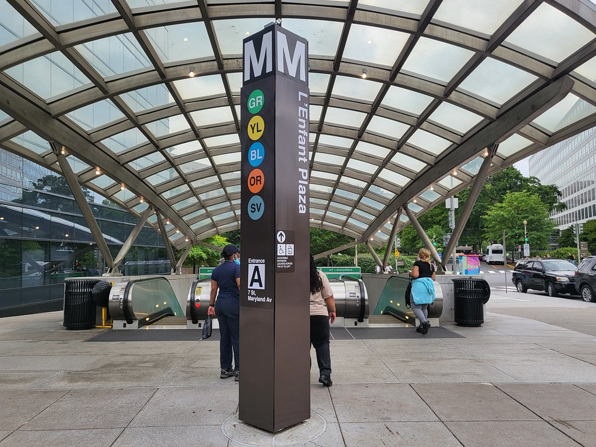
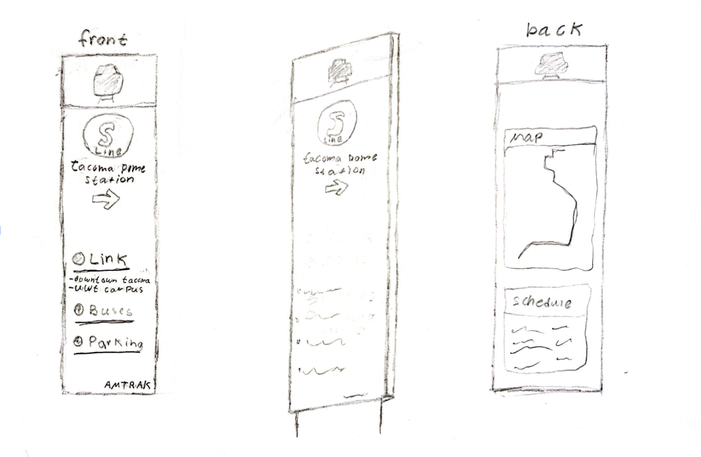
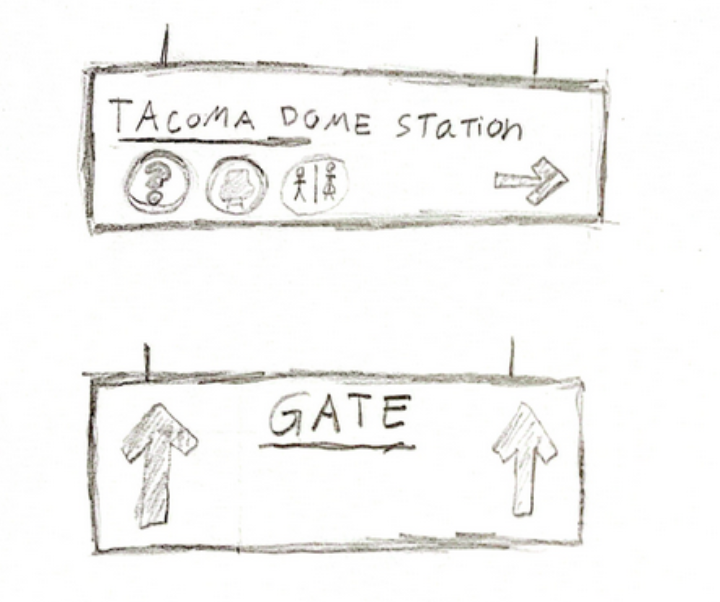
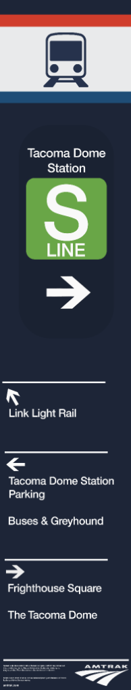
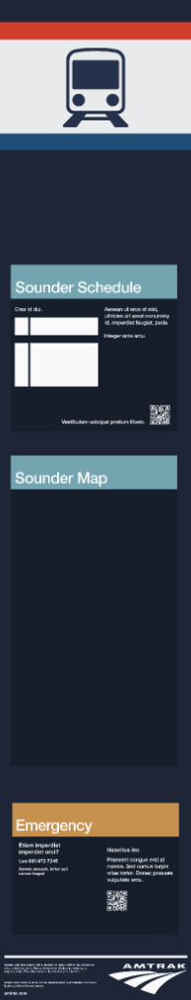

Traveling is hard — even when it's only from one town to another, I know the stress and anxiety of being in unfamiliar spaces all too well. It's often more emphasized in high foot-traffic areas like a train station. That's why, in collaboration with Amtrak, I was tasked with addressing issues related to accessibility, user experience, and navigation at the Tacoma, WA, Amtrak station. From the very beginning, my goal was to create clear, easy-to-read signage for inexperienced or first-time riders to make traveling less overwhelming. I kept new and anxious travelers at the forefront of my decision making.
Client: Amtrak
Summary: Improved signage for the Amtrak Tacoma Station to better target accessability and navigation.
Problem Statement: First-time and inexperienced travelers at the Tacoma Amtrak Station find it hard to navigate and access important information, leading to uncertainty. There is a need for clearer and more accessibility signage that prioritizes the experience of new riders.
Roles: Research, UX design, Graphic Design
＜/Research.＞
＜/Immersion.＞
To get an idea of the frequent pain-points and understand the end-user better I relied on immersion exposure. I wanted to know what it felt to be completely oblivious to an entirely new experience, since I had never ridden a train before. Doing this allowed me to brainstorm the most efficient designs to solve the issues of new Amtrak users.
- Going into this, I didn't look at photos from inside the building or directions.
- To get a general understanding of a new rider, I walked from the UW Tacoma campus.
- My destination was the building lobby.
- I took photographs and made several observations of all the surrounding signage.
I began my trip from the bottom of the stairs at the UW Tacoma campus. As I walked, I noticed very few signs pointing towards the Amtrak station to guide foot traffic — and also actual traffic.
Relying almost entirely on my phone's GPS, I finally arrived at the west side of the building but struggled to locate the main entrance. Not knowing where to go, I reached a pair of doors that a stern-looking security guard gave me passage to. It looked inviting enough, so I somewhat hesitantly entered.
Before the doors opened, I had assumed it was the main gate; however, I later realized it was the “Sounder Entrance.” (Yes, there's a difference.)
This mistake led me straight to the tracks, which wasn't where I wanted to be. Eventually I turned back and found a new pair of doors that led me to the Amtrak waiting room.
＜/Comparative.＞
＜/Metro Center Subway.＞
Located in Washington, D.C., these pylons are used throughout various parts of the city to direct travelers into subway systems. Their appeal comes from the minimal design, using limited color and text. Riders often praise them not just for their functionality, but also for their clean, modern design.

＜/Tokyo Subway.＞
In Tokyo, Japan, subway systems are filled with wayfinding signage similar to the photograph below. These signs follow a unified format, using clean typography, distinct iconography, and a captivating color palette. Like the previous example, Tokyo's signs stand out for its contemporary design, functional simplicity, and for being easy to follow.
This level of consistency across a large transit system reinforces the notion that good signage can greatly reduce confusion, even in crowded area.

＜/The Final Observations.＞
Station observations proved that Amtrak's wayfinding systems were not meeting modern expectations. Everyday users needed something that stood out — something that they can rely on when finding their destinations.
Moreover, it uncovered that the station was difficult to locate and navigate. This is detrimental for riders that are running late or those who aren't familiar with train station procedures.
Based on my comparative analysis, the Tacoma Amtrak Station has not invested as heavily as other transit stations.
Through this method, it revealed to me what “good” actually looks like. I could better ground my critique on evidence and allow me to refer to how other transit hubs handled it better.
＜/Sketching & Brainstorming.＞
＜/Wayfinding Pylons.＞
Inspired by the wayfinding pylons used in Washington, D.C. and similarly on the Seattle link light rail. These pylons, in addition to being used as direction for pedestrians, would also serve as orientation and reference points. This helps travelers quickly get directions, making navigation easier and more intuitive.

Overhead Signs
These are simpler designs intended for both outside and inside use. I wanted to separate important details (like where to find bathrooms, help desks, and gates) from the general navigational signage posted around the station's exterior.

＜/The Final Designs.＞
＜/Wayfinding Pylons.＞
These are the final designs for the pylon signs. They are intended to guide pedestrians toward the Amtrak station and would be strategically placed alongside sidewalks and high-foot-traffic areas. Designed with a front and rear-side for the best visibility, it would locate key areas of interest and give quick access to scheduling and map information.


＜/Wayfinding Pylons.＞
These are the final overhead signs, commonly seen in airports and major train stations. They are designed to provide directional assistance while also highlighting key areas within the station like restrooms, platforms, and waiting areas. These designs take cues from the Japanese subway system, particularly in its use of bright yellow backgrounds to emphasize high priority information like ticket purchasing and customer service.


＜/Takeaways.＞
The Tacoma Amtrak Station has a clear opportunity to improve the experience of arriving passengers. The first thing to address is better exterior wayfinding. Simple, well-balanced signs along the walking route from nearby landmarks would drastically improve navigation. Similarly, entrance labeling could help make the distinction between entrances and help travelers find important information.
This experience has reminded me that assumptions often get in the way of research. It showed me how easily a user's mental image can conflict with a product's actual layout. Design should account for that gap, rather than expect its users to adapt to it.